CS 180: Project 2
This is project 2 of CS 180 in Fall 2026, exploring image filtering and frequency-based image processing via convolution, edge detection, sharpening, hybrid images, gaussian and laplacian stacks, and multiresolution blending.
Note: click any image to enlarge it.
Part 1.1: Convolutions from Scratch
For Part 1.1, I implemented convolution in two ways. The four-loop version directly loops over every output pixel and every kernel entry, while the two-loop version still loops over image locations but uses NumPy to multiply and sum the whole image patch at once. Since convolution flips the kernel, I flip it before applying either implementation. I use zero padding with “same” output size, so the result has the same dimensions as the input image. This also means the border pixels can be affected by the padded zeros. As expected, the four-loop implementation is much slower than the two-loop version, and scipy.signal.convolve2d is much faster than both.
Helper Function
def shared_convolution(picture, filter):
picture = np.asarray(picture, dtype=float)
filter = np.asarray(filter, dtype=float)
height, width = picture.shape
filter_height, filter_width = filter.shape
top, left = filter_height // 2, filter_width // 2
bottom, right = filter_height - 1 - top, filter_width - 1 - left
padded = np.pad(picture, ((top, bottom), (left, right)))
flipped = np.flip(filter, axis=(0, 1))
return height, width, filter_height, filter_width, padded, flippedFour-Loop Implementation
def convolve_with_four_loops(picture, filter):
height, width, filter_height, filter_width, padded, flipped = shared_convolution(picture, filter)
output = np.zeros((height, width), dtype=float)
for i in range(height):
for j in range(width):
for ki in range(filter_height):
for kj in range(filter_width):
output[i, j] += padded[i + ki, j + kj] * flipped[ki, kj]
return outputTwo-Loop Implementation
def convolve_with_two_loops(picture, filter):
height, width, filter_height, filter_width, padded, flipped = shared_convolution(picture, filter)
output = np.zeros((height, width), dtype=float)
for i in range(height):
for j in range(width):
patch = padded[i:i + filter_height, j:j + filter_width]
output[i, j] = np.sum(patch * flipped)
return outputComparison with scipy.signal.convolve2d
| Implementation | Matches SciPy | Runtime (s) |
|---|---|---|
| Four loops | Yes | 10.11 |
| Two loops | Yes | 0.99 |
scipy.signal.convolve2d |
Reference | 0.044 |
Both of my implementations matched SciPy’s output. With the 9x9 box filter, the four-loop version took about 10.11 seconds, compared to 0.99 seconds for two loops and 0.044 seconds for SciPy. Using NumPy to multiply and sum each patch made the two-loop version much faster, though SciPy was still the fastest.
I used same padding with zeros so the output stayed the same size as the input. This can affect the borders as blurring makes them darker, and derivative filters can pick up artificial edges where the image meets the zeros.
9×9 Box Filter and Finite Differences
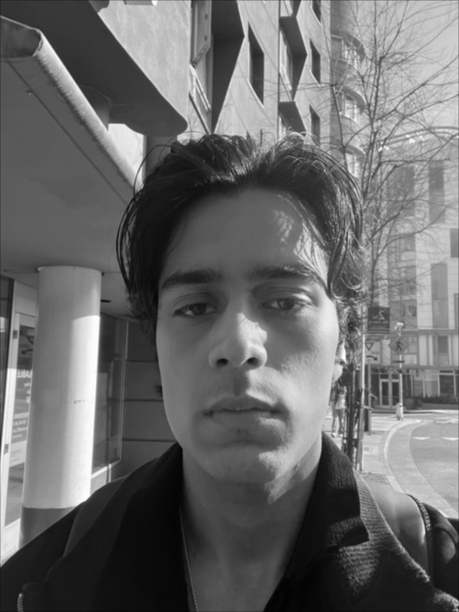
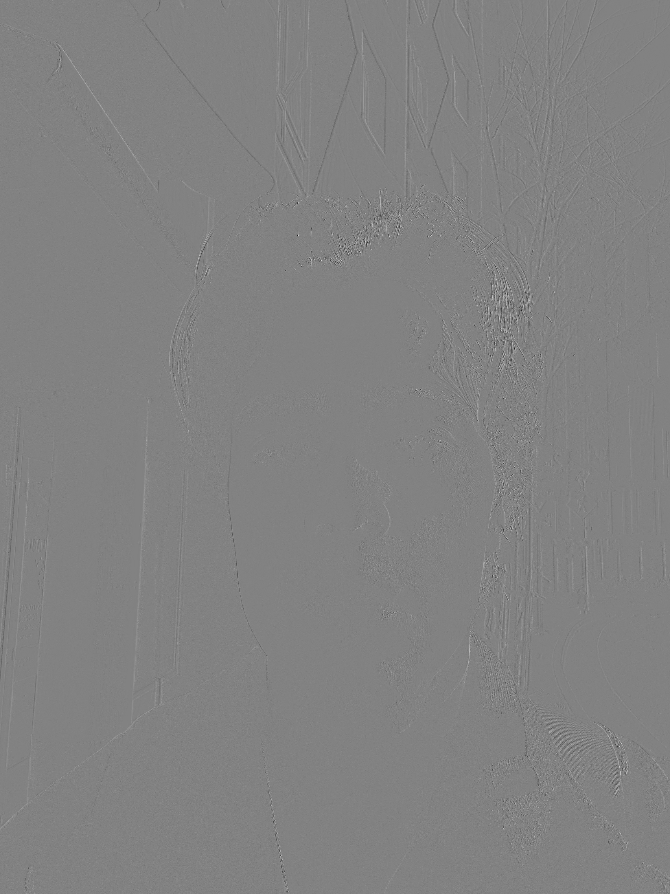
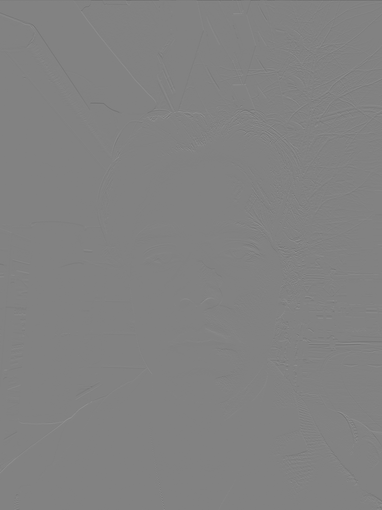
Part 1.2: Finite Difference Operator
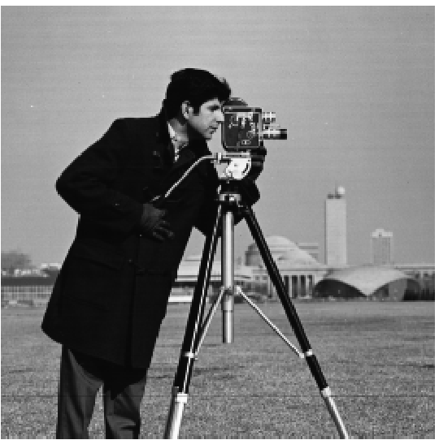
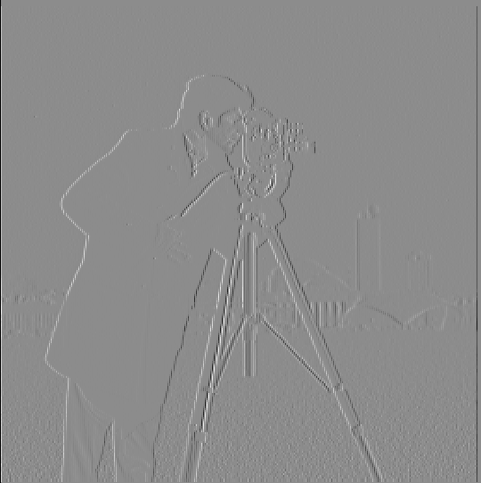
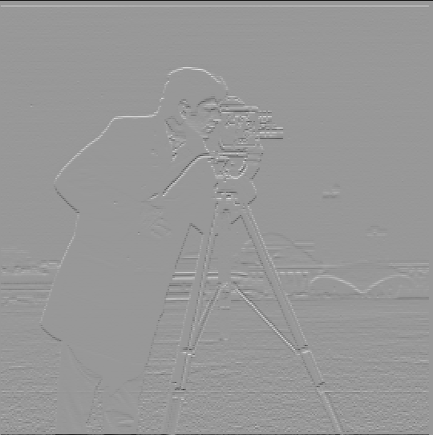
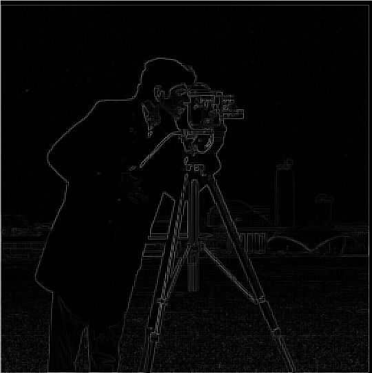
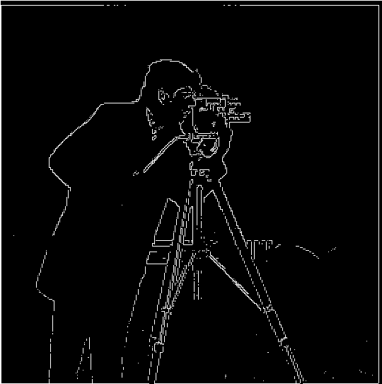
Threshold Selection
I tried thresholds from 0.05 to 0.40 and ended up choosing 0.30. Lower thresholds picked up a lot of texture on the ground, making the edge image cluttered. At 0.30, most of that disappeared while the cameraman, camera, and tripod were still recognizable. Increasing it further removed more and more of those outlines which we do not want.
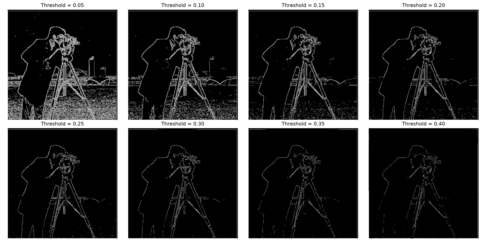
Part 1.3: Derivative of Gaussian (DoG) Filter
The finite-difference results from Part 1.2 contain a noticeable amount of high-frequency noise because the derivative operators respond strongly to small intensity changes. To reduce this noise, I first smooth the cameraman image with a Gaussian filter before computing the derivatives.
I constructed a 2D Gaussian kernel by taking the outer product of the 1D kernel returned by cv2.getGaussianKernel(). I then convolved the image with this Gaussian and applied the same finite-difference operators Dx and Dy as before. From these derivatives, I computed the gradient magnitude and thresholded it to obtain a binary edge image.
Compared with the result from Part 1.2, the Gaussian-smoothed result suppresses many small noisy responses while retaining the stronger structural edges in the image. The resulting edge map is therefore cleaner and less sensitive to small pixel-level variations.

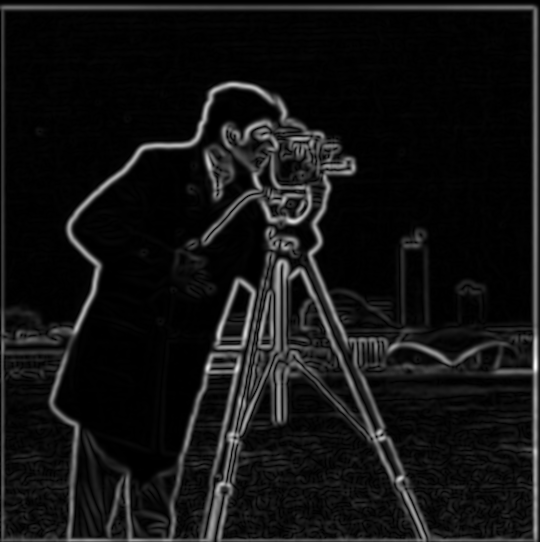
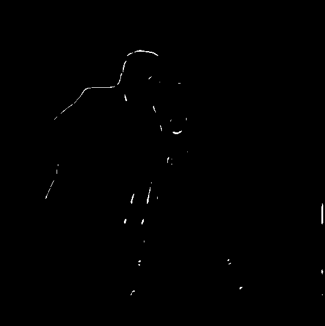
I used a threshold of 0.12 after Gaussian smoothing; because smoothing reduces noise, a lower threshold still preserves the main edges without introducing as many spurious responses.
Derivative of Gaussian Filters
The same operation can also be performed using a single convolution. Because convolution is associative, I can first convolve the Gaussian kernel with Dx and Dy to construct derivative-of-Gaussian filters:
I then convolve these filters directly with the original image. The resulting x- and y-derivatives match the results obtained by first blurring the image and then applying the finite-difference operators, up to numerical and boundary effects. This verifies that the two approaches are equivalent.
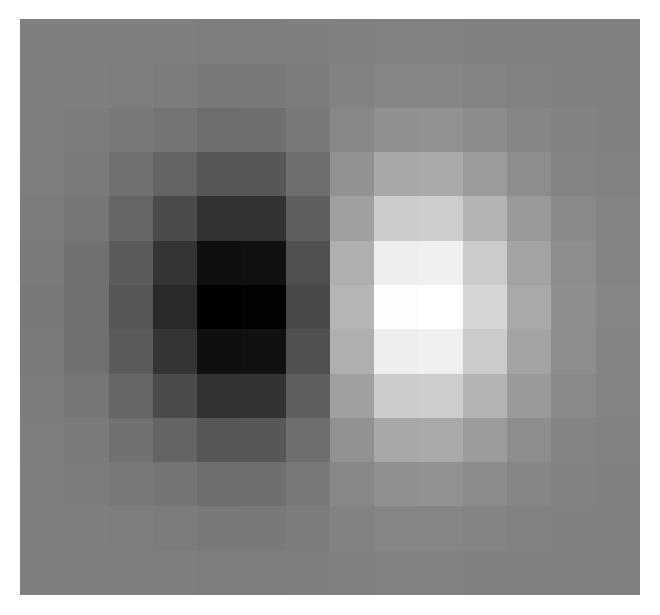
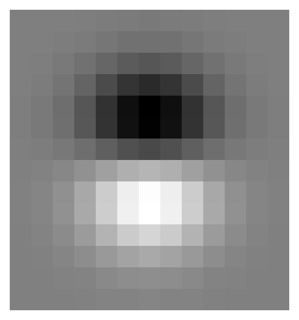

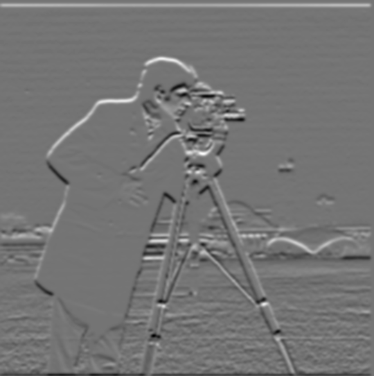
The direct DoG responses match the blur-then-differentiate results, confirming the equivalence of the two formulations.
Part 2.1: Image Sharpening
A Gaussian blur can be thought of as a low-pass filter. It keeps low frequencies of an image and smooths away the fine detail. Subtracting the blurred image from the original image only leaves the high frequencies. Essentially, the edges and texture.
Unsharp masking adds those high frequencies back to the original, scaled by an amount α, so the details become stronger than they were:
Here f is the image, G is the Gaussian and δ is the unit impulse, a kernel that is 1 at the center and 0 everywhere else, so convolving with it leaves the image unchanged. Because convolution is linear, the blur, subtraction and addition collapse into one kernel, (1 + α)δ − αG, which is the unsharp mask filter. Sharpening then takes a single convolution. I used a 13×13 Gaussian with σ = 2 and applied the filter to each color channel.
Taj Mahal
Varying the Sharpening Amount
Raising α makes the carvings, windows and outlines stand out more. At α = 4 it starts to overshoot: dark halos appear where the dome and trees meet the sky, and the colors and contrast look harsh and unnatural.
Boxing
Car
Blur Then Re-sharpen
To test the filter, I blurred an already sharp image of a bass guitar and then sharpened the blurred version with α = 2. The re-sharpened image looks much crisper than the blurred one: the outline of the body, the pickups and the knobs all have clear edges again. However, it still doesn't match the original. The strings are blending together and the small details are gone. There is a faint halo around the edges which should not be there. This is because the blur removed those fine details completely and sharpening can only amplify high frequencies that are still in the image so it cannot bring them back.
Part 2.2: Hybrid Images
Hybrid 1 (Favorite): Derek + Nutmeg · Full Process
I experimented with a few different cutoff values and ended up using σ = 3 for the high-pass image and σ = 8 for the low-pass image. This gave the clearest hybrid effect, where Derek is easier to see up close while Nutmeg becomes more visible from farther away. For the other two hybrids, I used σ = 4 for the high-pass image and σ = 8 for the low-pass image.
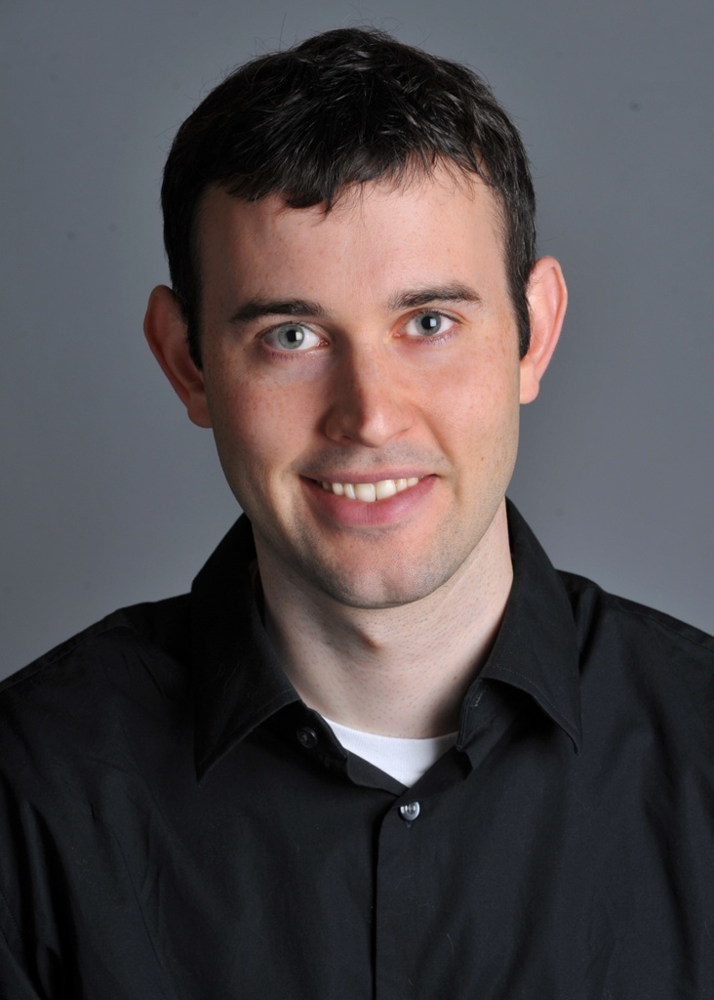
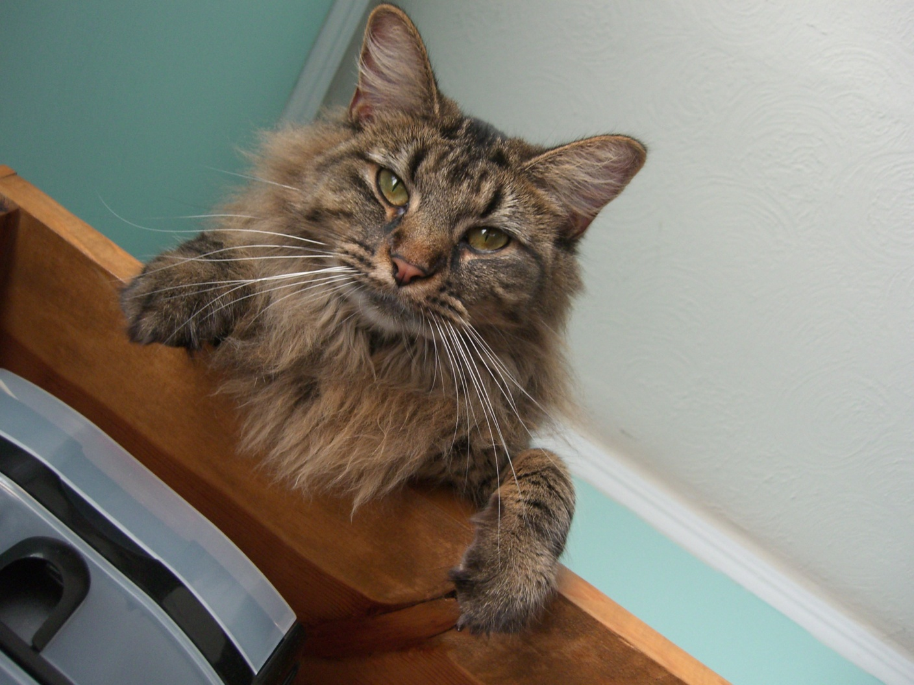
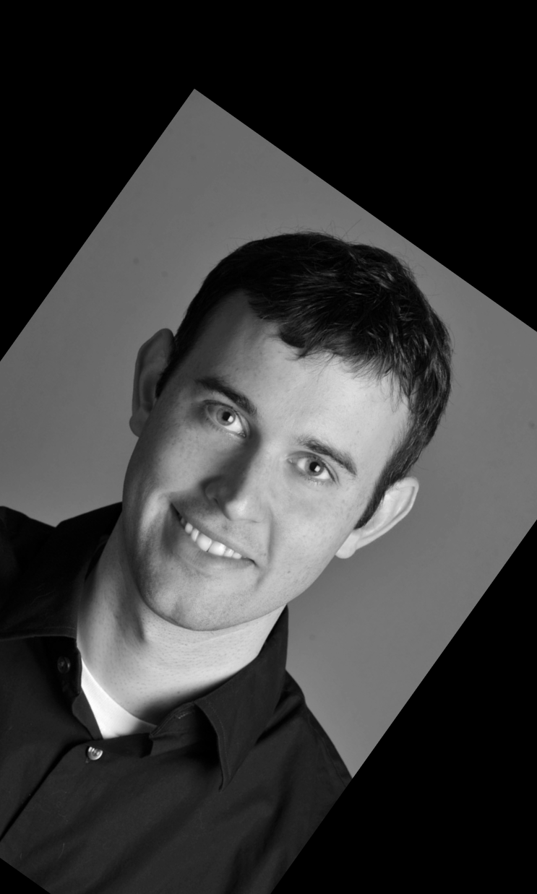
Hybrid 1: Filtered Results
Hybrid 1: Frequency Analysis
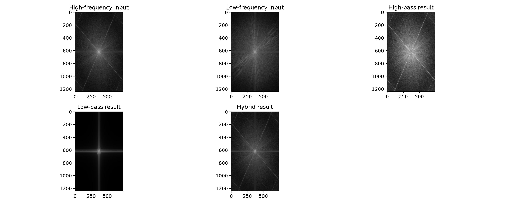
Hybrid 2: Cat + Dog
Hybrid 3: Kermit + Owl
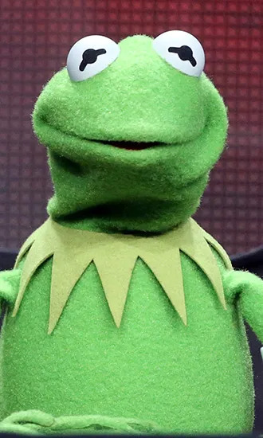
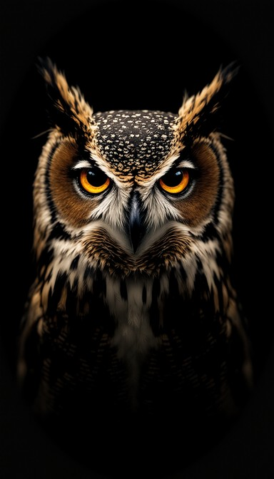
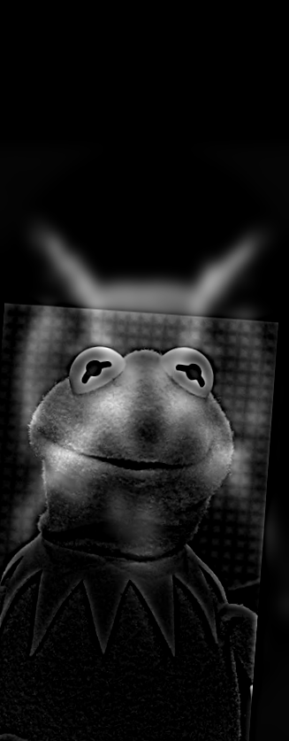
Part 2.3: Gaussian and Laplacian Stacks
Gaussian Stack
I built a Gaussian stack by applying stronger Gaussian blurs at each level without downsampling. As the level increases, more high-frequency detail is removed and the image becomes smoother.
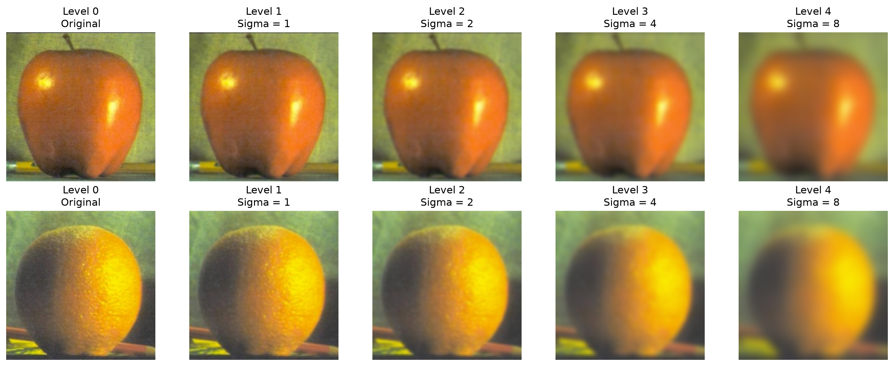
Laplacian Stack
I built the Laplacian stack by subtracting neighboring Gaussian levels. This separates the image into different frequency bands. The last level is just the coarsest Gaussian image, which keeps the remaining low-frequency information.
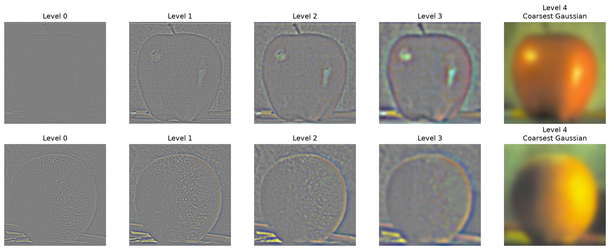
Reconstruction Check
Each Laplacian level is the difference between two neighboring Gaussian levels, and the last level is the coarsest Gaussian itself. Adding up all five levels should therefore give back the original image exactly. I summed the levels for both images and compared them with the originals. The largest pixel difference was about 1.1 × 10−16 for the apple and 2.8 × 10−17 for the orange, which is just floating-point rounding, so the stacks lose no information.
Figure 3.42 Recreation
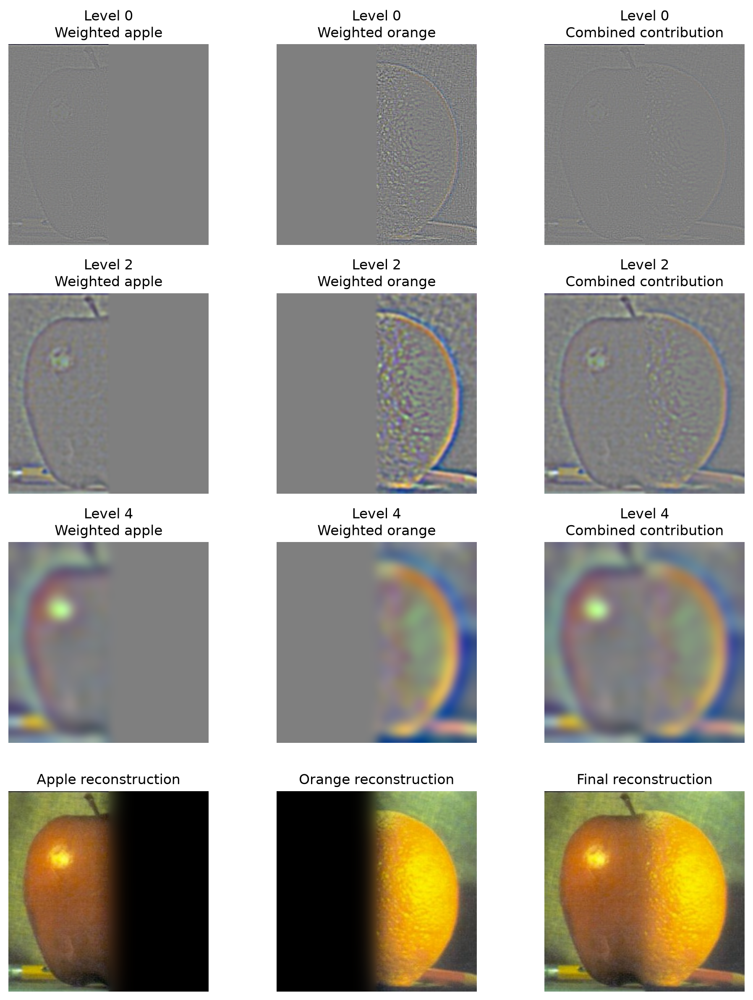
Part 2.4: Multiresolution Blending
For multiresolution blending, I create Laplacian stacks for the two input images and a Gaussian stack for the mask. At each level, I use the blurred mask to combine the corresponding Laplacian levels from the two images. The mask becomes smoother at the lower-frequency levels, so the transition between the images happens over a wider region there, while the higher-frequency details stay more local. I then add all the blended levels together to get the final image.
The Oraple


Custom Blend 1: Rhino + Horse


Custom Blend 2 (Irregular Mask): Oski + Rocky

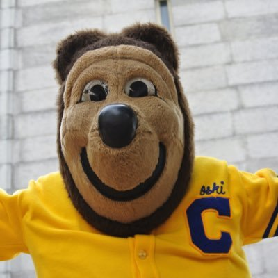

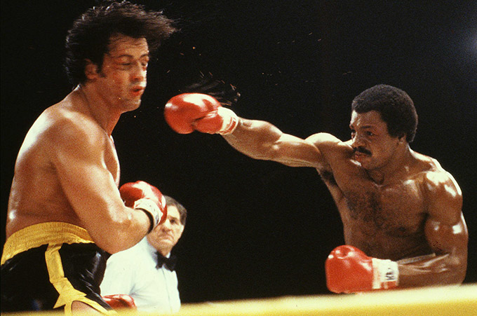

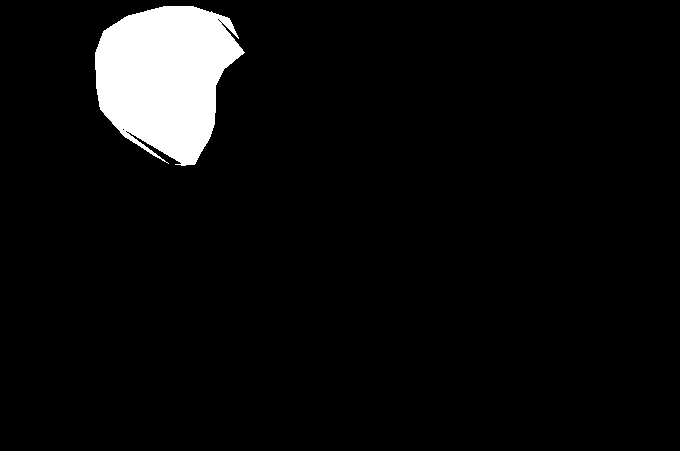

Favorite Blend: Laplacian Stack Process
Most Important Thing I Learned
The most important thing I learned from this project was how useful it is to think about images in terms of frequencies. A lot of different effects like sharpening, hybrid images, and blending can all be understood by separating high and low frequencies and combining them in various different ways. Before this project, I mostly thought of these as separate image processing tricks or did not know about them. But I learnt that they are all based on the same basic idea of controlling which frequencies are kept, removed, or emphasized.
Another interesting thing I liked was how the choice of scale matters. For sharpening, adding back high frequencies makes details and edges stand out more, but too much can create halos and make the image look unnatural or weird. For hybrid images, the high-frequency image dominates up close while the low-frequency image becomes more visible from far away. For 2.4 multiresolution blending, handling different frequency bands separately makes the seam much smoother than just combining the two images directly.
Overall, this project gave me a concrete intuition for how frequency-based image processing works in practice.